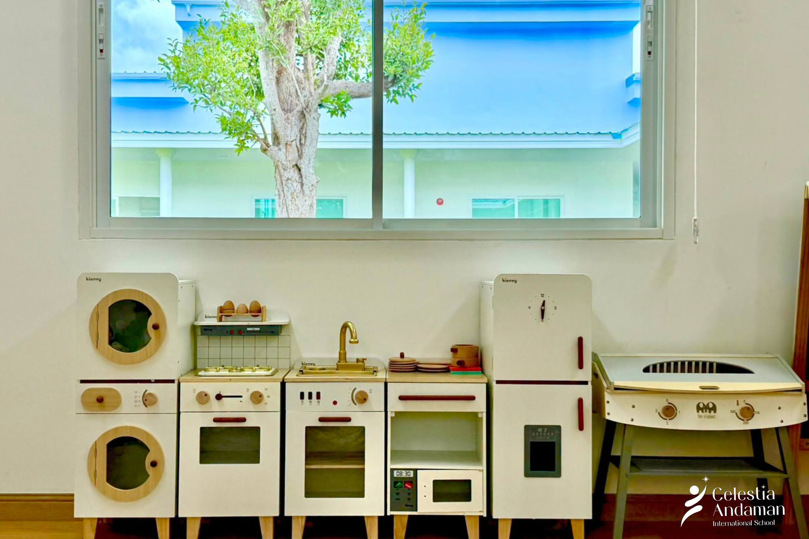

Pre-Nursery
First relationships, routines, communication and sensory exploration.
Curriculum & age
CAIS currently presents a British curriculum pathway for children ages 2–7, beginning with the Early Years Foundation Stage and continuing into Key Stage 1.

Where would my child start?
The class names below come from the current CAIS website. Admissions should confirm exact age cut-offs and placement for each child.
First relationships, routines, communication and sensory exploration.
Growing language, independence, movement and imaginative play.
Broader early learning goals and foundations for transition to primary.
More structured literacy, mathematics and connected subject learning.
Strengthening knowledge, independence and confident application.
Production requirement: confirm date-of-birth cut-offs, school-year calendar, class availability, hours and transition policy before this page is published.
Ages within the early years
The Early Years Foundation Stage organises development and care around play, relationships and seven connected areas of learning.
The primary transition
Year 1 and Year 2 build on early foundations with increasingly structured learning while preserving curiosity, active participation and meaningful connections.
How learning develops
Learning is not a sequence of worksheets. Teachers create experiences, observe what children understand, add language and challenge, then help them revisit and apply the idea.
Feeling safe and known creates readiness to join in.
Children encounter a question, material, story or real-world experience.
Play, talk, movement and guided teaching deepen understanding.
Children use new knowledge in another context and share what they learned.
A typical day · proposed structure

Arrival routines, conversation and a calm start.

Teacher-guided language, early mathematics or inquiry.

Outdoor movement, observation and first-hand experiences.

Role play, making, collaboration and independent choices.
This typical-day structure is a copy hypothesis based on CAIS positioning, not an approved timetable. Replace it with the school’s real sequence, meals, rest, specialist lessons and pickup times.
Questions parents need answered
Which class fits your child’s date of birth, previous experience and English-language needs?
How do teachers observe development and share next steps with families?
How are English, Thai language and Thai cultural experiences included?
How does the school prepare children to move from Reception into Year 1 and beyond?
Find the right starting point
Admissions can help you understand the most appropriate stage before you complete a full application.